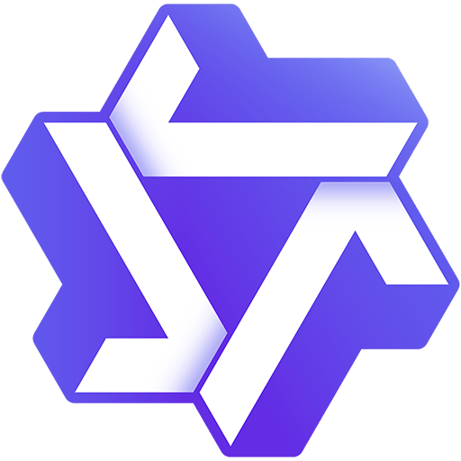

Liangcai Su (苏良才)
Computer Science, Ph.D. Student |
About Me
I am a Ph.D. student at The University of Hong Kong, majoring in Computer Science.
Previously, I received my Master's degree in Computer Technology from Tsinghua University in 2024 and obtained my B.Eng degree in Software Engineering from Xidian University in 2021. I was a research intern supervised by Jieming Zhu and at Tencent mentored by Junwei Pan and Ximei Wang. I was also a founder member of Deep Research Team at

Tongyi Lab.My research directions are Agentic Foundation Models and Deep Research Agents.
News
- Jul. 2026 Our work LiteScope was accepted by ASE 2026. Congrats to Yuanxiang! 🎉
- Mar. 2026 Our work R1-Fuzz was accepted by IEEE S&P 2026. 🎉
- Jan. 2026 Three papers were accepted by ICLR 2026. Congrats to all co-authors! 🎉 See you in Brazil!
- Sep. 2025 We release our open-source and powerful deep research agent Tongyi DeepResearch! Please see the tech blog for details. Our model is available at huggingface and modelscope.
- Aug. 2025 Our work ImportSnare was accepted by ACM CCS 2025. 🎉
Research Experiences
- Apodex, Research Intern. Dec. 2025 - Present
- Tongyi Lab (Deep Research Team), Research Intern (Founder Member). May 2025 - Dec. 2025
- The University of Hong Kong, Research Assistant. Nov. 2023 - Aug. 2024
- Tencent, Research Intern. Jun. 2022 - Nov. 2023
Technical Report
Apodex 1.0: Self-Evolving Heavy-Duty Solver
Core Contributor, Apodex
[📄 Paper] [📰 Blog] [🤗 HuggingFace] [ApodexAI/AgentHarness]Tongyi-DeepResearch
Core Contributor, DeepResearch Team, Tongyi Lab
[📄 Paper] [📰 Blog] [🤗 HuggingFace] [ ModelScope]
[ GitHub]
ModelScope]
[ GitHub]
Publications
(* denotes equal contributions; )
Scaling Agents via Continual Pre-training
, Zhen Zhang*, Guangyu Li*, Zhuo Chen*, Chenxi Wang*, Maojia Song, Xinyu Wang, et al.
ICLR 2026. [📄 Paper] [📰 VentureBeat]Argus: Evidence Assembly for Scalable Deep Research Agents
Zhen Zhang*, , Zhuo Chen*, Xiang Lin, Haotian Xu, Kaiyu Yang, Bo An, Simon Shaolei Du, Lidong Bing, Xinyu Wang.
Arxiv 2026. [📄 Paper]LiteScope: Revealing the Security Paradox of Android Lite Apps in Resource-Constrained Ecosystems
Yuanxiang Shi*, , Kai Ye, Xi Xiao, Chenxiong Qian.
ASE 2026. [To be appear]Expanding the Capability Frontier of LLM Agents with ZPD-Guided Data Synthesis
Xuanzhong Chen, Zile Qiao, Guoxin Chen, , Zhen Zhang, Xinyu Wang, et al.
ICLR 2026. [📄 Paper]AgentFold: Long-Horizon Web Agents with Proactive Context Folding
Rui Ye, Zhongwang Zhang, Kuan Li, Huifeng Yin, Zhengwei Tao, Yida Zhao, , et al.
ICLR 2026. [📄 Paper]R1-Fuzz: Specializing Language Models for Textual Fuzzing via Reinforcement Learning
Jiayi Lin, , Junzhe Li, Chenxiong Qian.
IEEE Symposium on Security and Privacy (IEEE S&P) 2026. [📄 Paper] [ GitHub] [🤗 HuggingFace]ImportSnare: Directed "Code Manual" Hijacking in Retrieval-Augmented Code Generation
Kai Ye, , Chenxiong Qian.
ACM CCS 2025. [📄 Paper] [🏠 Homepage]How Far Are We from True Unlearnability?
Kai Ye*, , Chenxiong Qian.
ICLR 2025. [📄 Paper]STEM: Unleashing the Power of Embeddings for Multi-task Recommendation
, Junwei Pan*, Ximei Wang, Xi Xiao, Shijie Quan, Xihua Chen, Jie Jiang.
AAAI 2024. [📄 Paper] [ GitHub]
Towards General Agentic Intelligence via Environment Scaling
Runnan Fang, Shihao Cai, Baixuan Li, Jialong Wu, Guangyu Li, Wenbiao Yin, Xinyu Wang, Xiaobin Wang,
, Zhen Zhang, et al.
Arxiv 2025. [📄 Paper]ERASE: Error-Resilient Representation Learning on Graphs for Label Noise Tolerance
Ling-Hao Chen, Yuanshuo Zhang, Taohua Huang, , Zeyi Lin, Xi Xiao, Xiaobo Xia, Tongliang Liu.
CIKM 2024. [📄 Paper] [🏠 Homepage] [ GitHub]Invisibility Cloak: Proactive Defense Against Visual Game Cheating
Chenxin Sun, Kai Ye, , Jiayi Zhang, and Chenxiong Qian.
USENIX Security 2024. [📄 Paper] [🏠 Homepage]A Survey of Generative Techniques for Spatial-Temporal Data Mining
Qianru Zhang, Haixin Wang, Cheng Long, , Xingwei He, Jianlong Chang, Tailin Wu, Hongzhi Yin, Siu-Ming Yiu, Qi Tian and Christian S. Jensen.
Preprint. [📄 Paper]
Multi-interest Learning for Multi-modal Paper Recommendation
Xiaoteng Shen*, , Xi Xiao, Yi Li
ICASSP 2024. [📄 Paper]Beyond Two-Tower Matching: Learning Sparse Retrievable Interaction Models for Recommendation
, Fan Yan, Jieming Zhu, Xi Xiao, Haoyi Duan, Zhou Zhao, Zhenhua Dong and Ruiming Tang.
SIGIR 2023. [📄 Paper]
FinalMLP: An Enhanced Two-Stream MLP Model for CTR Prediction
Kelong Mao, Jieming Zhu, , Guohao Cai, Yuru Li, Zhenhua Dong.
AAAI 2023. [📄 Paper] [ GitHub]BARS: Towards Open Benchmarking for Recommender Systems
Jieming Zhu, Quanyu Dai, , Rong Ma, Jinyang Liu, Guohao Cai, Xi Xiao, Rui Zhang.
SIGIR 2022. [📄 Paper] [ GitHub] [🏠 Homepage]PEAR: Personalized Re-ranking with Contextualized Transformer for Recommendation
Yi Li, Jieming Zhu, Weiwen Liu, , Guohao Cai, Qi Zhang, Ruiming Tang, Xi Xiao, Xiuqiang He.
WWW 2022. [📄 Paper]
Awards
- Outstanding Graduates of Beijing(北京市优秀毕业生), 2024.
- Best Report Award, The 15th Nanshan Academic Forum for Doctoral Students in the Guangdong-Hong Kong-Macao Greater Bay Area, 2023.
- ACM SIGIR 2023 Student Travel Award.
- Comprehensive Excellent Second-class Scholarship, Tsinghua University, 2022 & 2023 (Two times).
- National Scholarship(国家奖学金), 2019-2020. (Top 1% Student in XDU)
- National Scholarship(国家奖学金), 2017-2018. (Top 1% Student in XDU)